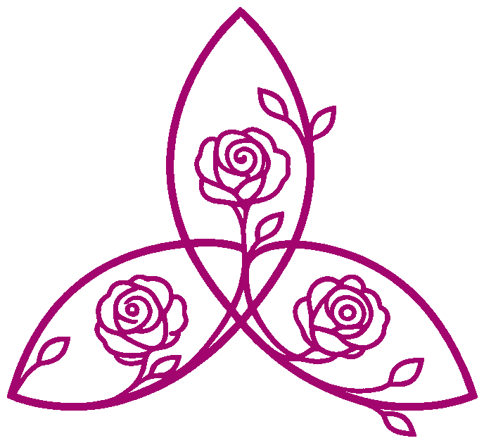
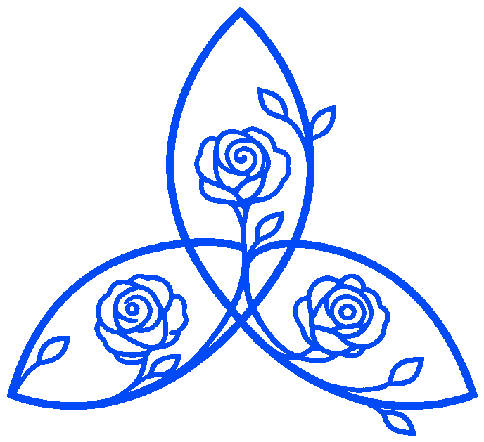
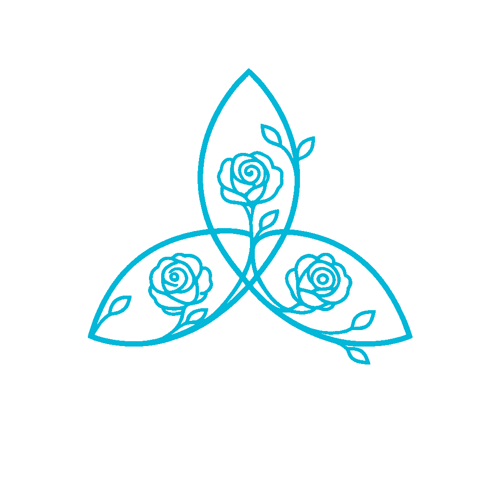

1:1 readings, in-person sessions, retreats, and workshops for anyone ready to reconnect with their own intuition.
I didn't set out to become a medium. In fact, I spent much of my life trying not to.
Raised as the eldest of nine children in a devout Catholic family, I grew up with a deep reverence for mystery—and an equally deep suspicion of anything that wandered beyond the boundaries of the Church. Although my grandmother quietly read fortunes with a simple deck of playing cards, I was taught that practices like hers, along with nearly any spiritual path outside Catholicism, were dangerous or even "the devil's work."
And yet, questions have always found me.
Over the years, I explored many expressions of Christianity, searching for a faith spacious enough to hold both contemplation and curiosity. Along the way, I discovered teachers and communities that helped me see intuition not as something to fear, but as a gift to be cultivated with humility, discernment, and love. My studies include Richard Rohr's The Living School and Sterling Moon's Divination Academy, experiences that deepened both my spiritual practice and my commitment to serving others with integrity.
Today, I understand spirituality as something far more expansive than the traditions I inherited. I believe wisdom is not confined to one religion, one lineage, or one way of knowing. Whether through intuitive guidance, divination, or mediumship, my work is less about predicting the future than creating space for deeper listening—to yourself, to your ancestors, to Spirit, and to the quiet truths that often go unheard in the rush of everyday life.
I welcome people of every faith, every doubt, and every stage of the journey. You don't need to share my beliefs to work with me. You only need to bring your questions, your openness, and a willingness to listen for what may be waiting to emerge.
It is a privilege to walk alongside people as they reconnect with their own intuition, honor those who came before them, and discover the wisdom that has been with them all along.

Phone or video sessions offering intuitive guidance, mediumship, and space for deeper listening — wherever you are.
Virtual readings start at $45 for a 30-minute session

A private, in-person session held with care and presence, for those who wish to connect face to face.
In-person readings range from $75–150 and may include a travel fee
Multi-day gatherings in nature that weave contemplation, ritual, and community for shared spiritual exploration.
Ongoing classes on intuitive development and divination, taught with humility, discernment, and love.
A seeker. A diviner. A reluctant medium. Most of all, a compassionate guide for people navigating life's questions and transitions.

Reach out by email to ask a question, schedule a reading, or learn more about upcoming retreats and workshops.